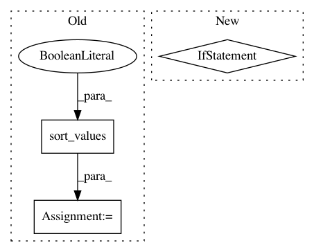

50144fec311ae3905f89831b7b0283964212593f,python/xpctl/sql/backend.py,SQLRepo,get_results,#SQLRepo#Any#Any#Any#Any#Any#Any#,229
Before Change
if len(metric) == 1:
metric = metric[0]
if metric == "avg_loss" or metric == "perplexity":
result_frame = frame.sort_values(metric, ascending=True)
else:
result_frame = frame.sort_values(metric, ascending=False)
if sort:
if sort == "avg_loss" or sort == "perplexity":
frame = result_frame.sort_values(sort, ascending=True)
else:
frame = result_frame.sort_values(sort, ascending=False)
return frame
After Change
results.append(result)
cols = ["id", "username", "label", "dataset", "sha1", "date"] + metrics_to_add
result_frame = pd.DataFrame(results, columns=cols)
if not result_frame.empty:
return df_get_results(result_frame, dataset, num_exps, metric, sort)
return None
def experiment_details(self, user, metric, sort, task, event_type, sha1, n):
session = self.Session()
In pattern: SUPERPATTERN
Frequency: 3
Non-data size: 3
Instances
Project Name: dpressel/mead-baseline
Commit Name: 50144fec311ae3905f89831b7b0283964212593f
Time: 2018-08-08
Author: sagnik1987@gmail.com
File Name: python/xpctl/sql/backend.py
Class Name: SQLRepo
Method Name: get_results
Project Name: commonsense/conceptnet5
Commit Name: 45c2d9c14ccaf85c5c350d7242ad4893539801eb
Time: 2016-06-16
Author: rob@luminoso.com
File Name: conceptnet5/vectors/__init__.py
Class Name:
Method Name: similar_to_vec
Project Name: commonsense/conceptnet5
Commit Name: e843bf1f958bc62866bbb434f785e1470f7f1683
Time: 2019-07-01
Author: rspeer@luminoso.com
File Name: conceptnet5/vectors/retrofit.py
Class Name:
Method Name: join_shards